Chapter 16 A grammar for graphics
16.1 geoms
In this section, we will create some of the most routinely used plots to explore data using the geom_ functions.
We will use the following libraries in this post:
- readr
- ggplot2
- tibble
- dplyr
Which are part of the tidyverse. By loading the tidyverse, we also load all the packages mentioned above
require(tidyverse)All the data sets used in this post can be found here and code can be downloaded from here.
octopus = read_csv("./data/octopus_data.csv")## Parsed with column specification:
## cols(
## date = col_date(format = ""),
## village = col_character(),
## port = col_character(),
## ground = col_character(),
## sex = col_character(),
## dml = col_double(),
## tl = col_double(),
## weight = col_double(),
## lat = col_double(),
## lon = col_double()
## )The variables representing the X and Y axis can be specified either in ggplot() or in geom_point(). We will learn to modify the appearance of the points in a different post.
ggplot(data = octopus,
aes(x = tl, y = weight)) +
geom_point()16.1.1 Regression Line
You can fit the regression on the scatterplot with geom_smooth()
lm = ggplot(data = octopus,
aes(x = tl, y = weight)) +
geom_point()+
geom_smooth(method = "lm", se = TRUE)+
labs(x = NULL, y = NULL, title = "linear model")
gam = ggplot(data = octopus,
aes(x = tl, y = weight)) +
geom_point()+
geom_smooth(method = "gam", se = TRUE)+
labs(x = NULL, y = NULL, title = "GAM")
loess = ggplot(data = octopus,
aes(x = tl, y = weight)) +
geom_point()+
geom_smooth(method = "loess", se = FALSE)+
labs(x = NULL, y = NULL, title = "LOESS")
egg::ggarrange(lm,gam, loess, nrow = 1)
16.1.2 Horizontal/ vertical lines
A segment of horizontal or vertical line can be added on the plot using egg::ggarrange
16.1.2.1 Vertical Line
For the vertical line, the x axis intercept must be specified in geom_vline()
ggplot(data = octopus,
aes(x = tl, y = weight)) +
geom_point() +
geom_smooth(method = "lm", se = FALSE) +
geom_vline(xintercept = 100, linetype = 1, size = .5, col = "red")
16.1.2.2 Vertical Line
In similar manner, for the horizontal line, the y axis intercept must be specified in geom_hline()
ggplot(data = octopus,
aes(x = tl, y = weight)) +
geom_point() +
geom_smooth(method = "lm", se = FALSE) +
geom_hline(yintercept = 2, linetype = 1, size = .5, col = "red")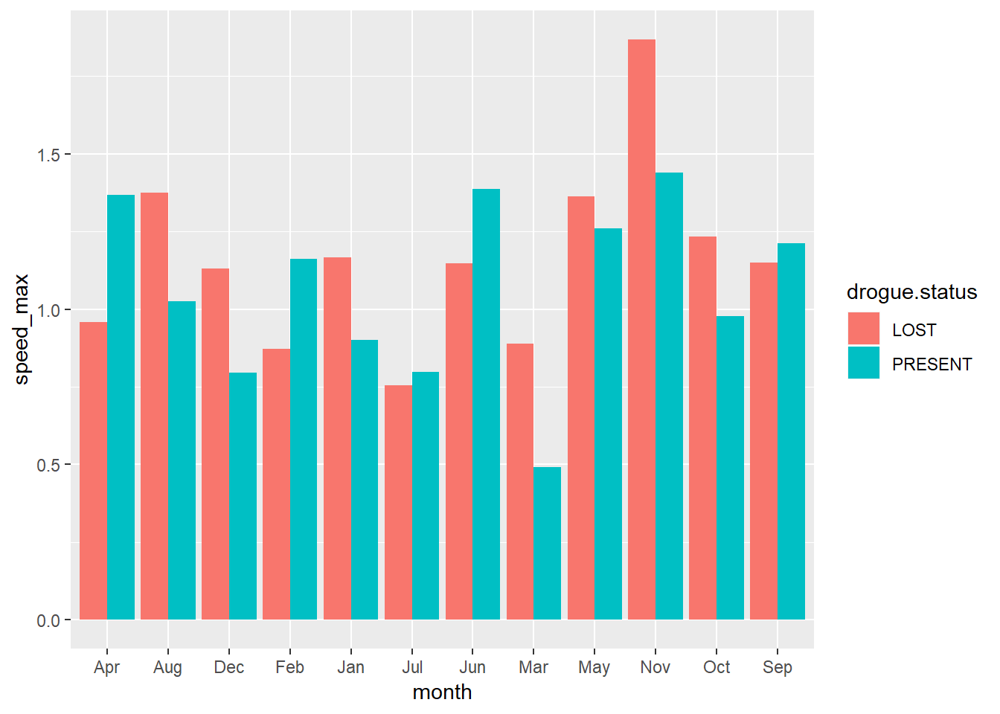
16.2 aes()
In this section, we focus on the aesthetics i.e. color, shape, size, alpha, line type, line width etc. We can map these to variables or specify values for them. If we want to map the above to variables, we have to specify them within the aes() function. We will look at both methods in the following sections.
Explore aesthetics such as
- color
- shape
- size
- fill
- alpha
- width
16.2.1 Color
In ggplot2, when we mention color or colour, it usually refers to the color of the geoms. The fill argument is used to specify the color of the shapes in certain cases. In this section, we will see how we can specify the color for the different geoms we learnt in the previous post.
For points, the color argument specifies the color of the point for certain shapes and border for others. The fill argument is used to specify the background for some shapes and will not work with other shapes. Let us look at an example:
ggplot(data = octopus,
aes(x = tl, y = weight, col = sex)) +
geom_point() 
If you do not want to map a variable to color, you can specify it separately using the color argument but in this case it should be outside the aes() function.
ggplot(data = octopus,
aes(x = tl, y = weight, col = sex)) +
geom_point(col = "blue") 
16.2.2 shape
ggplot(data = octopus,
aes(x = tl, y = weight, shape = sex)) +
geom_point() Let us map size of points to a variable. It is advised to map size only to continuous variables and not categorical variables.
ggplot(data = octopus,
aes(x = tl, y = weight, col = sex, size = dml)) +
geom_point() 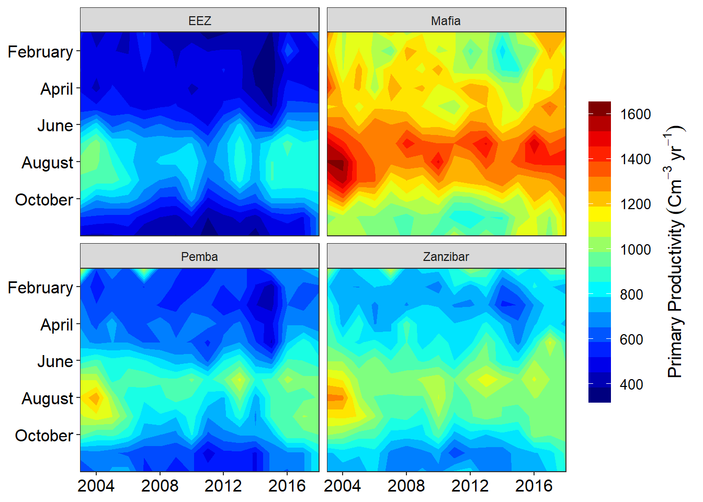
16.3 Axis and labels
In this section, we learn about about aesthetic and focus on
- add title and subtitle to the plot
- modify axis labels
- modify axis range
- remove axis format axis
Let us start with a simple scatter plot. We will continue to use the octopus data set and examine the relationship between total length and body weight using geom_point().
oct = ggplot(data = octopus,
aes(x = tl, y = weight)) +
geom_point()+
geom_smooth(method = "gam", se = TRUE)We add the axis labels, title and subtitle for the plot using the labs()
ggplot(data = octopus,
aes(x = tl, y = weight)) +
geom_point()+
geom_smooth(method = "gam", se = TRUE) +
labs(x = "Total length (cm)", y = "Weight (g)",
title = "Octopus", subtitle = "The total length and body weight of octopus")
## Axis Range
Often times, you may want to modify the range of the axis value. In ggplot2, we can achieve this using scale_function
ggplot(data = octopus,
aes(x = tl, y = weight)) +
geom_point()+
geom_smooth(method = "gam", se = TRUE) +
labs(x = "Total length (cm)", y = "Weight (g)",
title = "Octopus", subtitle = "The total length and body weight of octopus")+
scale_x_continuous(breaks = seq(30,180,30))+
scale_y_continuous(breaks = seq(0,5,1))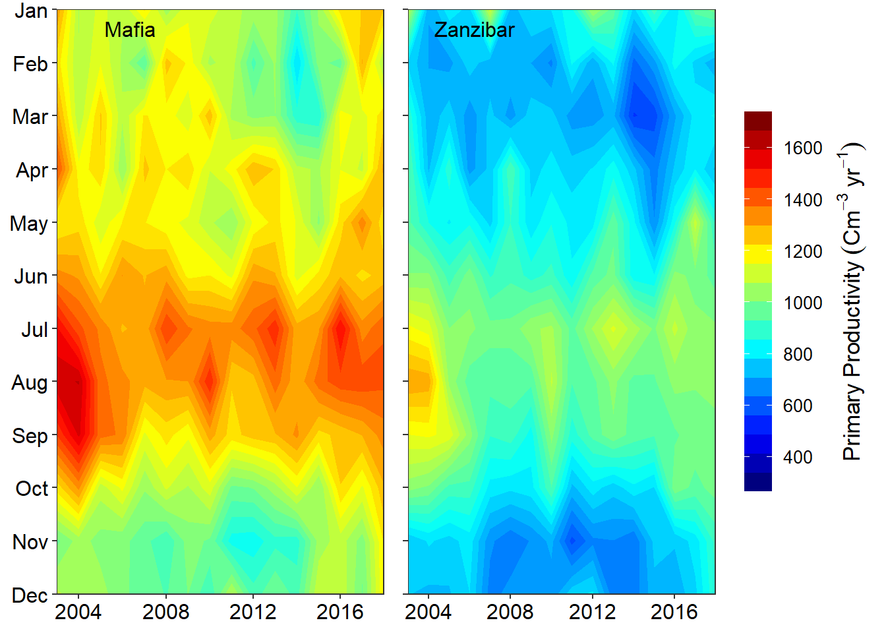
Sometimes the axis label become a reduntat
ggplot(data = octopus,
aes(x = tl, y = weight)) +
geom_point()+
geom_smooth(method = "gam", se = TRUE) +
theme(axis.title = element_blank())
16.4 Text annotaion
Annotation help to add custom text to the plot.
ggplot(data = octopus,
aes(x = tl, y = weight)) +
geom_point()+
geom_smooth(method = "gam", se = TRUE) +
annotate(geom = "text", x = 20, y = 2.2, label = "outlier", color = "red")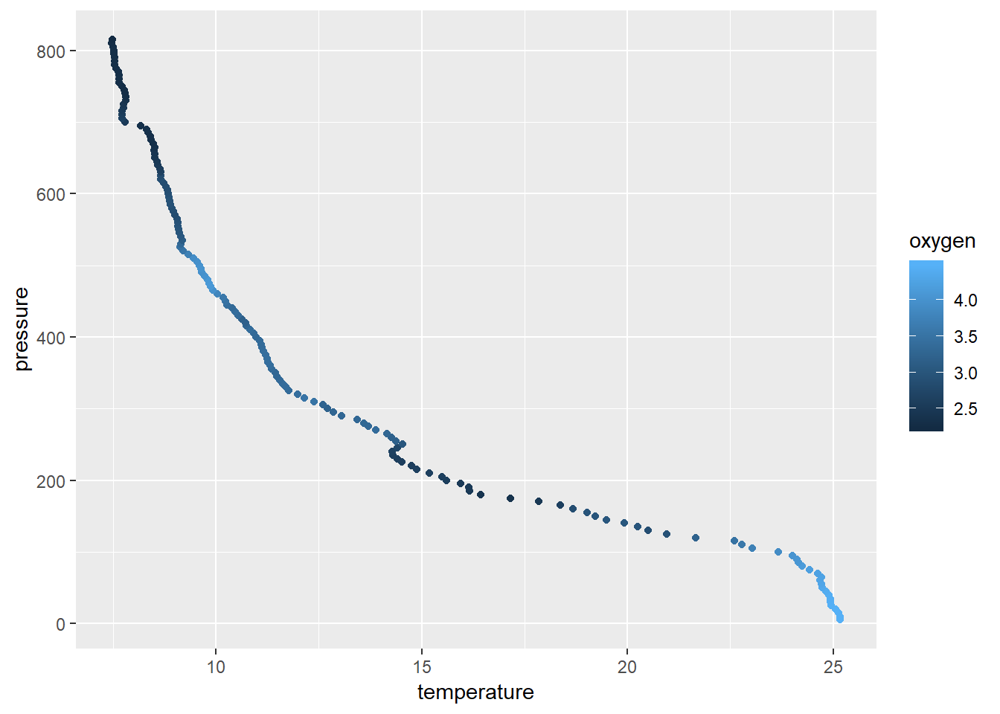
16.5 Scales
Scales help to modify the axis. ggplot2 and its extensions has several scale_*() functions for that purpose. These function allows to modify titles, labels, limits, breaks and position of the axis.
The x and y-axis of a continuous data is modified with the scale_x_continuous() and scale_y_continuous() functions.
ggplot(data = octopus,
aes(x = tl, y = weight)) +
geom_point()+
geom_smooth(method = "gam", se = TRUE)+
scale_x_continuous(limits = c(50, 150), breaks = seq(50,150,20))+
scale_y_continuous(limits = c(0,3), breaks = seq(.5, 3, .5))
The x and y-axis of a continuous data is modified with the scale_x_discrete() and scale_y_continuous() functions.
ggplot(data = chl.season %>%
filter( chl < .25), aes(x = season, y = chl))+
geom_boxplot( outlier.colour = "red", outlier.shape = 8, outlier.size = 4)+
scale_x_discrete(limits = c("NE", "IN", "SE"))+
scale_y_continuous(breaks = seq(0.16,0.25,.02))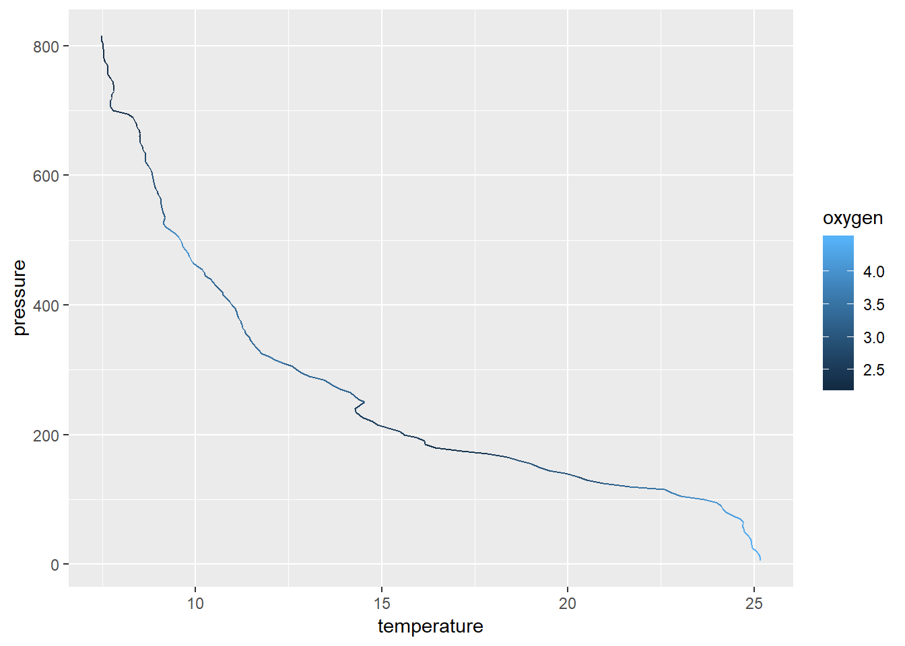
when the data has been transformed, for instance because of the low value, chlorophyll-a are often stretched with the log-tranformation for visual appeal. But the log-transformed values make no sense about concentration and hence the real values must replace them. We can change the tick labels using the labels argument. When adding labels, tick breaks and labels must have the same length.
ggplot(data = chl.season %>%
filter( chl < .25), aes(x = season, y = chl %>% log()))+
geom_boxplot( outlier.colour = "red", outlier.shape = 8, outlier.size = 4)+
scale_x_discrete(limits = c("NE", "IN", "SE"),
labels = c("Inter", "Northeast", "Southeast"))+
scale_y_continuous(breaks = seq(-1.8,-1.4,length.out = 5),
labels = seq(0.16,0.25,length.out = 5))
The position of the axes can be changed using the position argument. For instance, to move the the x-axis to the top of the plot you only need to specify position = top as written in code below;
ggplot(data = chl.season %>%
filter( chl < .25), aes(x = season, y = chl %>% log()))+
geom_boxplot( outlier.colour = "red", outlier.shape = 8, outlier.size = 4)+
scale_x_discrete(position = "top",
limits = c("NE", "IN", "SE"),
labels = c("Inter", "Northeast", "Southeast"))+
scale_y_continuous(breaks = seq(-1.8,-1.4,length.out = 5),
labels = seq(0.16,0.25,length.out = 5))
Fill the boxplot with season to specify the colors and arrange the colors manual with scale_fill_manual() function as written below.
ggplot(data = chl.season %>%
filter( chl < .25), aes(x = season, y = chl, fill = season))+
geom_boxplot( outlier.colour = "red", outlier.shape = 8, outlier.size = 4)+
scale_fill_manual(values = c("blue", "red", "green"))+
scale_x_discrete(limits = c("NE", "IN", "SE"),
labels = c("Northeast", "Inter", "Southeast"))+
scale_y_continuous(breaks = seq(0.16,0.25,.02)) +
theme(legend.position = "right")
Note the order of layers matter here: you scale_fill_manual() function must start before scale_x_discrete() function. Otherwise the colours you specify mismatch with legend colors as shown
ggplot(data = chl.season %>%
filter( chl < .25), aes(x = season, y = chl, fill = season))+
geom_boxplot( outlier.colour = "red", outlier.shape = 8, outlier.size = 4)+
scale_x_discrete(limits = c("NE", "IN", "SE"),
labels = c("Northeast", "Inter", "Southeast"))+
scale_fill_manual(values = c("red", "blue", "green"))+
scale_y_continuous(breaks = seq(0.16,0.25,.02)) +
theme(legend.position = "right")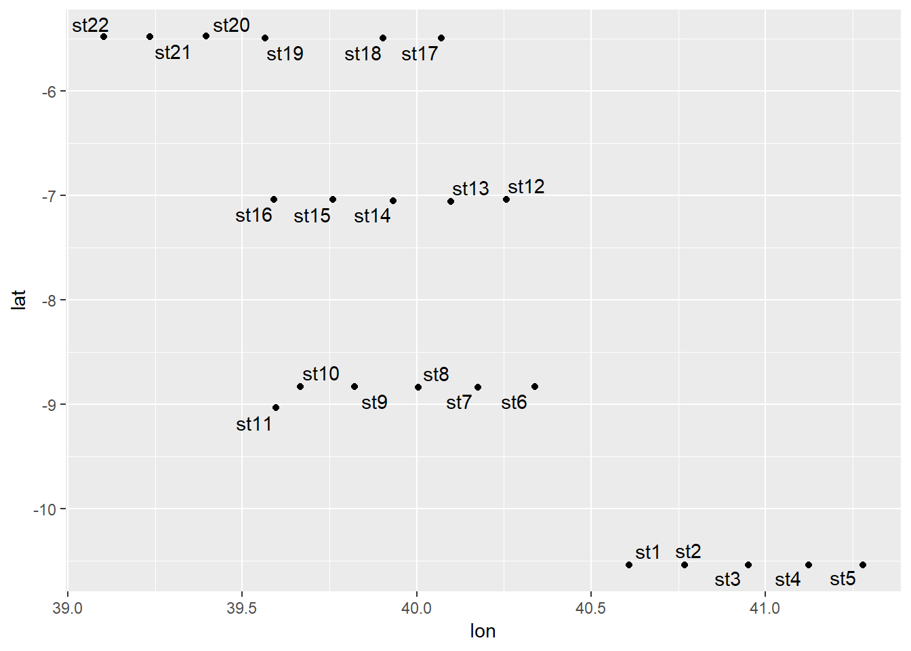
The scale_*_reverse() allows to reverse the order of the axis. For instance, when plotting profiles, we reverse y-xis and position the label of x-axis at the top
ggplot(data = algoa.average,
aes(x = value, y = pressure))+
geom_path() +
scale_y_reverse(limits = c(800,0))+
scale_x_continuous(position = "top") +
facet_wrap(~variable, scales = "free_x", nrow = 1)
16.6 Guides
guides() helps to set, modify and remove legend for a specific aesthetic. It has two functions—guide_legend() or guide_colorbar(). Let make a section plot of the fluorescence with the default options for the legend
section = ggplot(data = algoa %>% filter(lat < -10),
aes(x = lon, y = pressure, z = fluorescence)) +
metR::geom_contour_fill(na.fill = TRUE) +
metR::scale_x_longitude(ticks = .15) +
scale_y_reverse( limits = c(200,0))+
scale_fill_gradientn(colours = oce::oce.colors9A(120),
breaks = seq(0.15,1.25, length.out = 10) %>%round(2))+
labs(subtitle = paste("Section of oxygen along latitude", metR::LatLabel(-10.54)))
section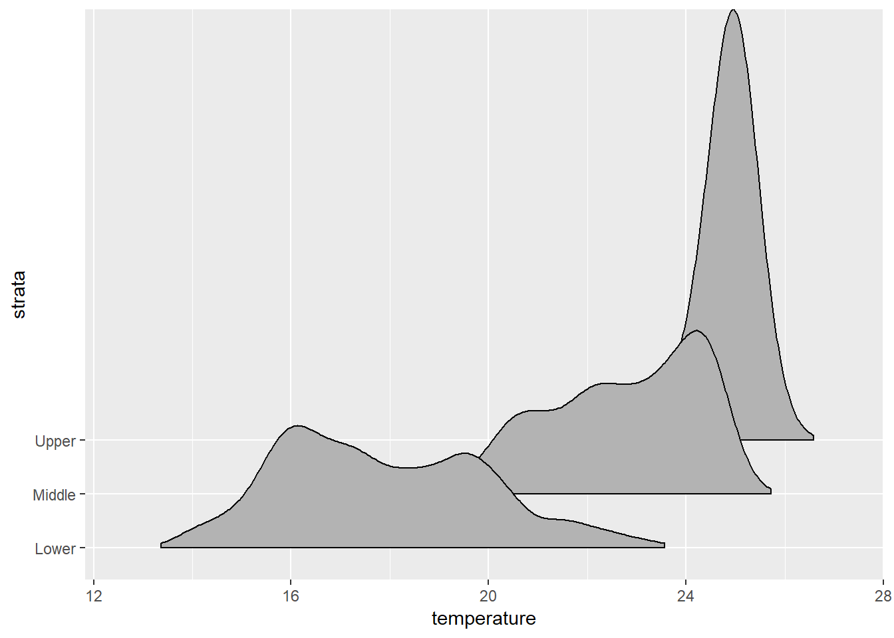
We can add the contour labels and remove the legend in a graph
section +
metR::geom_contour2() +
metR::geom_text_contour() +
guides(fill = FALSE)## Warning: imputing missing values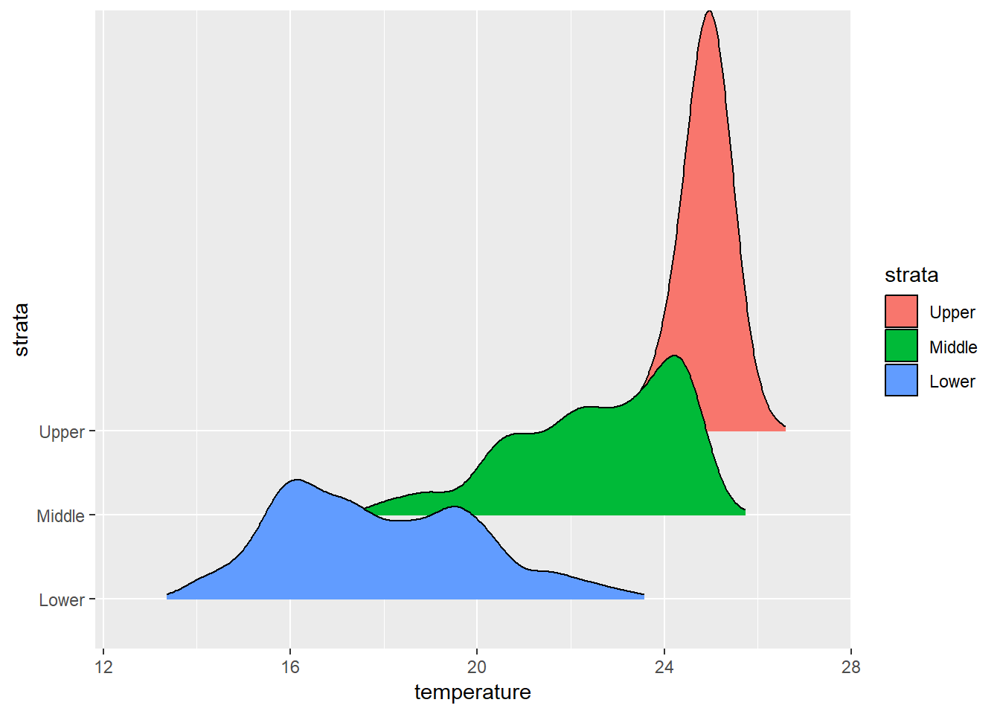
The guide_colorbar() modify the look and appearance of the legend to smooth colorbar. for instane the code of lines below highlight the key arguments that one has to specify to modify the legend of colorbar.
section +
guides(fill = guide_colorbar(title = expression(Chlorophyll~concentration~(mgm^{-3})),
title.position = "right",
title.theme = element_text(angle = 90, size = 13),
title.hjust = .5,
label.theme = element_text(angle = 0, size = 11),
label.position = "right",
raster = FALSE,
nbin = 12,
reverse = FALSE,
barwidth = 1.1,
barheight = 15))
If you want the legend to appear as individual key, use guide_colorbar() as written in the code below
section +
theme(legend.position = "bottom") +
guides(fill = guide_legend(title = expression(Chlorophyll~concentration~(mgm^{-3})),
title.position = "top",
title.theme = element_text(angle = 0, size = 13),
title.hjust = .5,nrow = 1,
reverse = FALSE,
keywidth = 3., keyheight = .8,
direction = "horizontal",
label.theme = element_text(angle = 0, size = 11),
label.position = "bottom"))## Warning: imputing missing values
16.7 Themes
Themes in ggplot modify the appearance of all non data compoments in the plot like: axis, legend, panel, plot area, background, margin, facets etc. Let’s create a profile plot of temperature with default theme settings
profile = ggplot(data = algoa %>% filter(lat < -10),
aes(x = temperature, y = pressure, color = station))+
geom_path() +
scale_y_reverse(limits = c(800,0))+
scale_x_continuous(position = "top") +
labs(y = "Pressure [m]",x = expression(Temperature~(degree*C)))
profileWe can modify the size and color of axis label with the axis.text() and axis title with axis.title() functions. You can use axis.title.y to modify the Y axis title and to modify the title of both the axis together, use axis.title.
profile +
theme(axis.text = element_text(size = 11, colour = "black"),
axis.title = element_text(size = 14, colour = "black"))## Warning: Removed 77 rows containing missing values (geom_path).
To modify the appearance of the axis ticks, use the axis.ticks_* argument. You can change the color, size, linetype and length of the ticks using the element_line() function as shown below.
profile +
theme(axis.text = element_text(size = 11, colour = "black"),
axis.title = element_text(size = 14, colour = "black"),
axis.ticks.length = unit(.3, "cm"))## Warning: Removed 77 rows containing missing values (geom_path).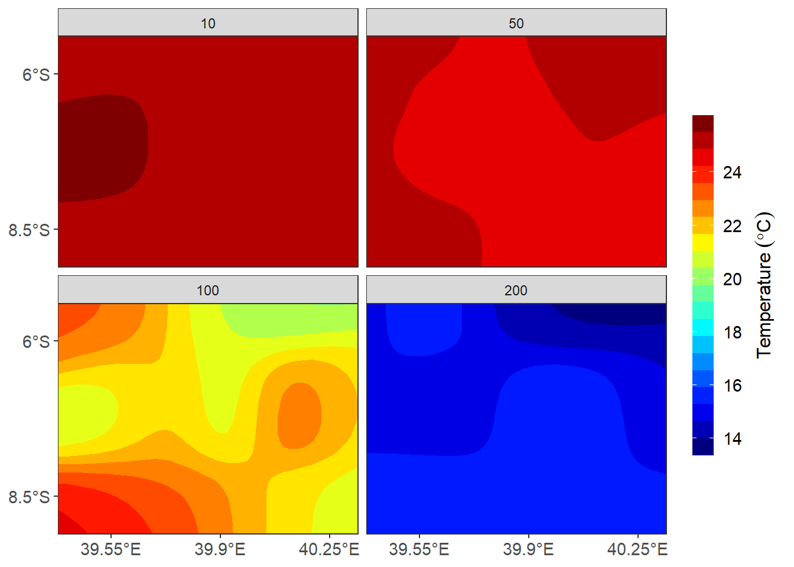
The panel_grid argument is used to modify the appearance of the gridlines. You can change the color, size and linetype of the line using the element_line() function.
profile +
theme(axis.text = element_text(size = 11, colour = "black"),
axis.title = element_text(size = 14, colour = "black"),
axis.ticks.length = unit(.3, "cm"),
panel.grid = element_line(colour = "grey60", linetype = 3))## Warning: Removed 77 rows containing missing values (geom_path).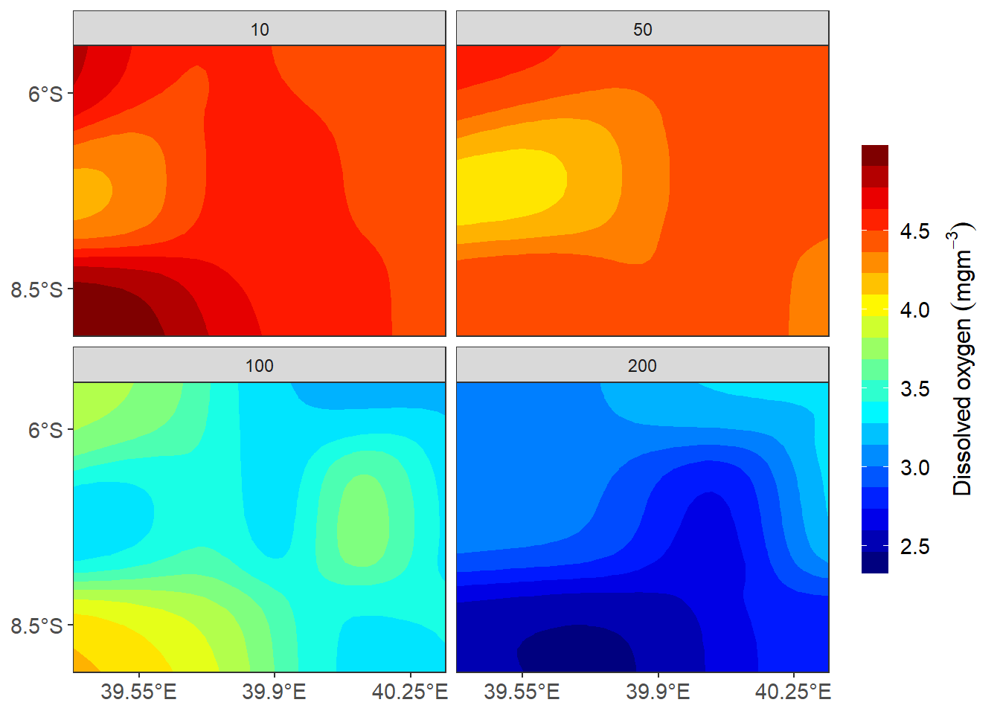
The background of the legend can be modified using the legend.background argument. You can change the background color, the border color and line type using element_rect().
profile +
theme(axis.text = element_text(size = 11, colour = "black"),
axis.title = element_text(size = 14, colour = "black"),
axis.ticks.length = unit(.3, "cm"),
panel.grid = element_line(colour = "grey60", linetype = 3),
panel.background = element_rect(fill = "white", colour = "black"))## Warning: Removed 77 rows containing missing values (geom_path).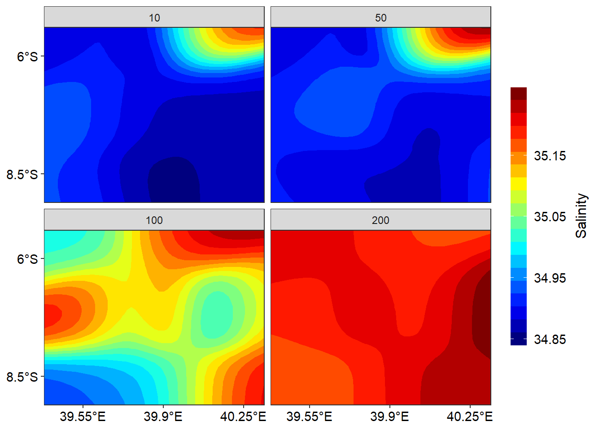
Now, let us look at modifying the non-data components of a legend.
profile +
theme(axis.text = element_text(size = 11, colour = "black"),
axis.title = element_text(size = 14, colour = "black"),
axis.ticks.length = unit(.3, "cm"),
panel.grid = element_line(colour = "grey60", linetype = 3),
panel.background = element_rect(fill = "white", colour = "black"),
legend.key = element_blank(),
legend.position = c(.9,.3),
legend.background = element_rect(colour = "black", fill = "white"))## Warning: Removed 77 rows containing missing values (geom_path).The appearance of the text can be modified using the legend.text argument. You can change the color, size and font using the element_text() function. The position and direction of the legend can be changed using legend.position() function.
profile +
scale_color_discrete(name = "Stations")+
theme(axis.text = element_text(size = 11, colour = "black"),
axis.title = element_text(size = 14, colour = "black"),
axis.ticks.length = unit(.3, "cm"),
panel.grid = element_line(colour = "grey60", linetype = 3),
panel.background = element_rect(fill = "white", colour = "black"),
legend.key = element_blank(),
legend.position = c(.9,.3),
legend.background = element_rect(colour = "black", fill = "white"),
legend.text = element_text(size = 11, colour = "black"),
legend.title = element_text(size = 13, colour = "black"))## Warning: Removed 77 rows containing missing values (geom_path).